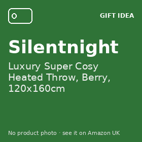
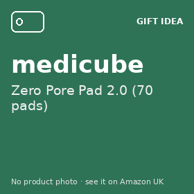
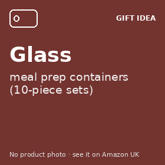
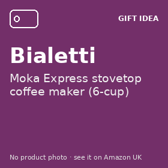

As seen on our TikTok
Every product from our TikTok @ukgiftsfinds clips, newest first. Updated Wednesday 7 October 2026.
Prices change often, so we don't show them here: each product has a button to see today's price on Amazon UK.
-

Silentnight Luxury Super Cosy Heated Throw, Berry, 120x160cm Ad
▶ Heated throw clip, 7 Oct 2026
Prices change often, so we don't show them here: tap below for today's price on Amazon UK.
9 heat settings, switches off after 2 hours unless you set it longer, machine washable, 3-year manufacturer's guarantee (from the Amazon listing).
See today's price on Amazon UK -

medicube Zero Pore Pad 2.0 (70 pads) Ad
Prices change often, so we don't show them here: tap below for today's price on Amazon UK.
70 pads per tub. One side is textured, the other is smooth.
See today's price on Amazon UK -
BIODANCE Bio-Collagen Real Deep Mask, 4 pcs Ad
Prices change often, so we don't show them here: tap below for today's price on Amazon UK.
Pack of 4 gel sheet masks. The brand says to leave it on for 3–4 hours or overnight, and that it turns from white to clear.
See today's price on Amazon UK -

Glass meal prep containers (10-piece sets) Ad
Prices change often, so we don't show them here: tap below for today's price on Amazon UK.
Glass doesn't hold curry stains or smells like plastic tubs. Check the lids: they usually aren't oven-safe. Heavier, so don't drop them. Read our explainer
Compare 10-piece glass sets on Amazon UK -

Bialetti Moka Express stovetop coffee maker (6-cup) Ad
Prices change often, so we don't show them here: tap below for today's price on Amazon UK.
Espresso-style coffee on the hob, no pods. Classic aluminium models don't work on induction hobs. Read our explainer
See today's price on Amazon UK
About our clips
- Our clips use an AI voice (and some use an AI presenter). They are labelled AI-generated on TikTok. They are not real reviews and nobody in them has used the product.
- We don't show product photos here: each product has our own text card. Tap through to see the product on Amazon UK.
- If you buy through a link marked Ad, we may earn a small commission at no extra cost to you. How we make money.